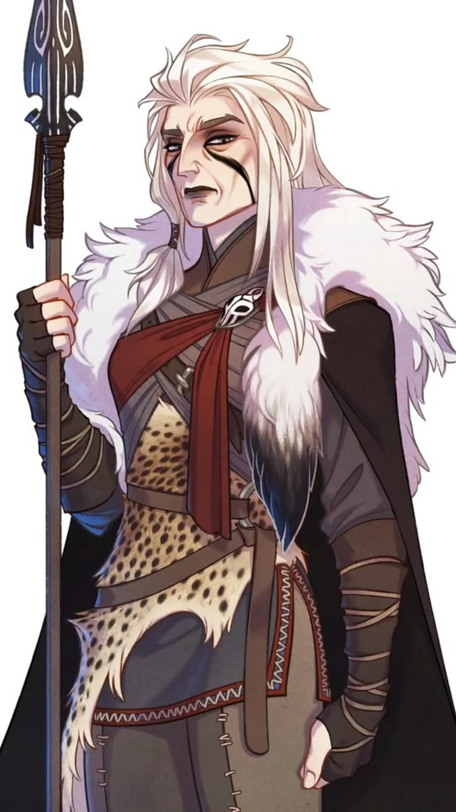
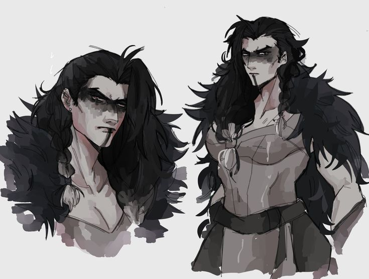
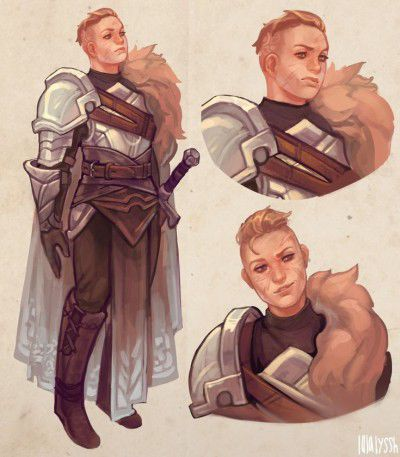
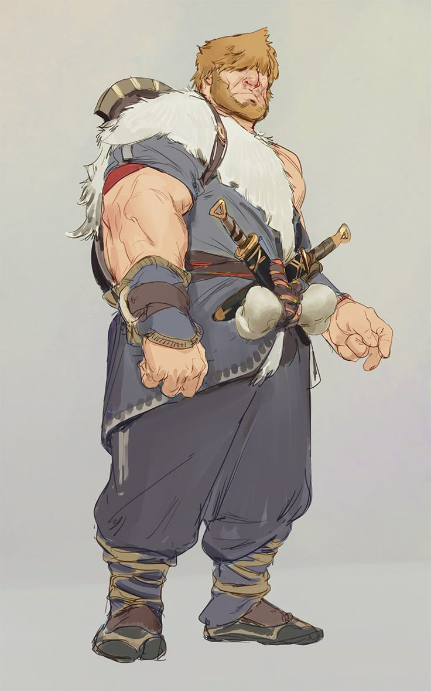
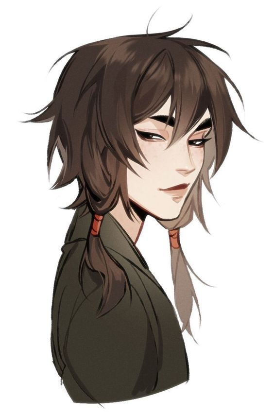

A Dinastia Caribu governa o Reino de Aucrib desde que a própria deusa se deu por inteiro ao seu povo. Suas filhas ergueram um reino sobre a lembrança desse sacrifício — e suas netas seguem, cada uma à sua maneira, decidindo o que fazer com o peso de um sangue nascido do gelo e da entrega.
✦ nomenclaturas reais
Os Títulos da Linhagem
OLDPELT
Antiga Pele
Título concedido ao Antigo Monarca — a pele que já foi vestida e passada adiante para outro caçador liderar a matilha.
WINTERCROWN
Coroa de Inverno
Título da Monarca Atual — quem lidera a caça no auge do inverno mais rigoroso.
YOUNGWOLF
Loba Jovem
Título de quem já caça ao lado da coroa e aprende, aos poucos, a liderar a própria matilha.
STRAYPACK
Matilha Solta
Título genérico para quem nasceu do mesmo sangue mas segue caminhos que a coroa não escreveu.
✦ A RAINHA DO NORTE

✦ família real caribu
Clarisse Caribu
Filha mais velha de Aucrib, ela viu sua mãe se sacrificar pelo próprio povo. Foi ela quem organizou a cerimônia de despedida, e ainda hoje sabe que honra a mãe com seu reinado sobre as terras do norte.
✦ A MARECHAL REAL

✦ família real caribu
Claire Caribu
Não se sabe ao certo como surgiu — dizem que, ao Aucrib ser devorada, o sangue digerido por uma loba a gerou. O que se sabe é que ela apareceu como caçadora e matadora dias após a morte de Aucrib, conquistando seu lugar ao lado de Clarisse como Conselheira e Marechal Real.
✦ OS FILHOS DE CLARISSE

✦ família real caribu
Maggie Caribu
Filha mais velha de Clarisse, Maggie segue os passos da tia — hoje é Marquesa e General de Elg.

✦ família real caribu
Hond Caribu
Filho mais novo de Clarisse, abandonou a vida real e se mudou para a região de Temme. Não se tem notícias dele.
✦ A FILHA DE CLAIRE

✦ família real caribu
Xand Caribu
Filha única de Claire, temperamental como a mãe — está sempre a acompanhando, buscando aprender as coisas na prática.